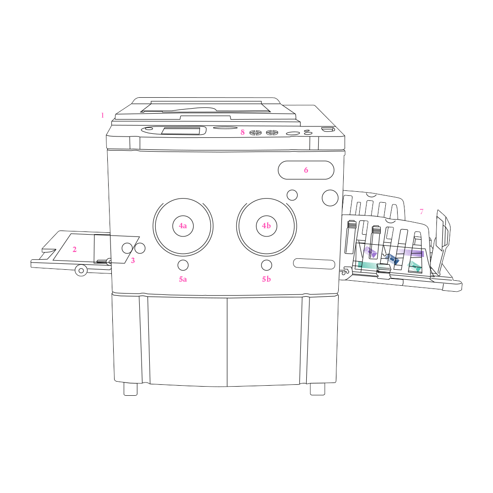

A Risograph is a digital stencil duplicator — part photocopier, part screen print, part mimeograph. Understanding how it works makes you a better designer for it.
The Risograph is manufactured by Riso Kagaku Corporation, a Japanese company. The name combines Riso (理想, "ideal") with graph. It was designed for fast, affordable duplication — not for fine art — but its mechanical quirks and semi-transparent inks have made it a beloved tool for zine makers, printmakers, and designers worldwide.
At its core, the machine is a stencil duplicator. It burns your artwork into a master stencil wrapped around an ink-filled drum, then presses paper against the drum at high speed, forcing ink through the stencil onto the page. Each ink color is a separate drum — a two-color print requires two passes through the machine.

RISO inks are rice-bran oil based, which makes them more biodegradable than petroleum-based alternatives and produces less heat during printing than laser or inkjet processes. More importantly for designers: the inks are semi-transparent.
Unlike offset or screen printing inks that sit opaquely on the surface, RISO ink soaks slightly into the paper and lets the substrate show through. This transparency is what makes overprinting interesting — wherever two ink layers overlap, they mix both optically and physically to create a third color.
The ink range includes standard colors as well as fluorescent inks — fluorescent pink, lime, and orange — that glow with a saturation no screen can accurately preview. These are a defining part of the RISO aesthetic.
The Risograph descends from the mimeograph, a stencil-based duplicating machine invented in the late 19th century. Mimeographs used hand-cut or typed stencils and a hand-cranked drum; they were the dominant self-publishing technology through the mid-20th century, fueling the fanzine and underground press movements of the 1940s–70s.
Riso Kagaku introduced the Risograph in 1980, merging the mimeograph's stencil-and-drum mechanics with photocopier-style digital scanning and automated master-making. It quickly found a market in schools, churches, and community organizations printing medium runs cheaply and quickly.
The art world rediscovered it in the 2000s and 2010s. Its constraints — limited ink colors, semi-transparent inks, visible misregistration, and grain from the stencil — became aesthetic assets rather than flaws. RISO print shops now operate in most major cities, serving independent publishers, artists, and designers.
RISO prints are recognizable by a few consistent characteristics, all of which come directly from the process:
Because paper feeds through twice — once per ink color — the two layers never align perfectly. A 1–3mm offset is normal and expected. Designs that embrace this read as more authentically RISO than designs that try to fight it.
The stencil process can't reproduce continuous tone — gradients and photographs are converted to dot patterns (halftone or dither) that are visible at close range. The dot structure is a defining part of the RISO look.
Ink coverage varies slightly across the sheet — denser in some areas, lighter in others — especially near the edges. This gives prints a handmade quality absent from digital output. It's not a defect; it's part of the character.
RISO inks are semi-transparent — the paper color shows through, and wherever two inks overlap they mix to produce a third color. The paper itself is an active part of the composition, not just a neutral background.
Fluorescent inks — pink, lime, orange — glow with a saturation no screen can accurately preview. They react to ambient and UV light in a way that makes them look almost neon on paper. You have to see a fluorescent RISO print in person to understand it.
The Risograph works best for runs of 50 to 5,000 copies. Below that, setup time (making the master, loading the drum, running test sheets) isn't worth it versus digital printing. Above that, offset printing becomes more economical.
For class projects, most shops will print small runs — even single copies — though the per-unit cost is higher. Check with your print shop about their minimum run and setup fees.
How RISO Color Works · Two-Color Design · Stencil Wiki · PageMasters — Risograph